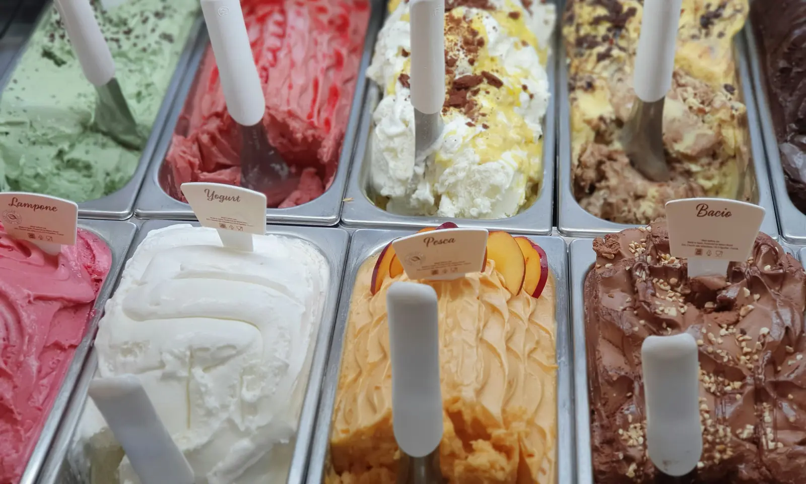
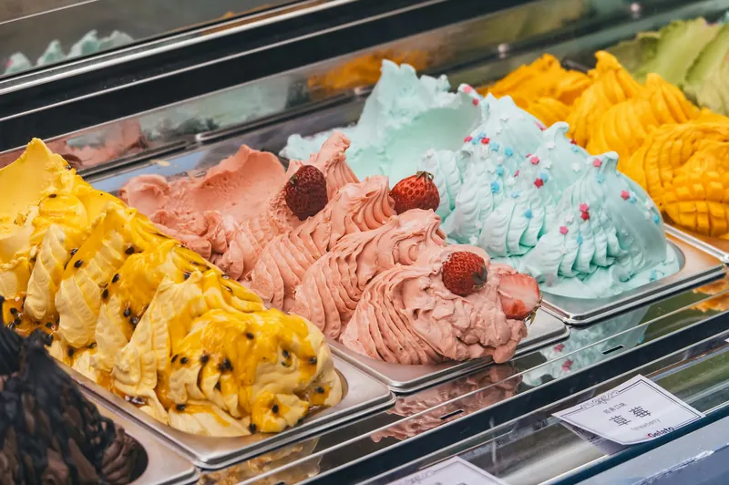
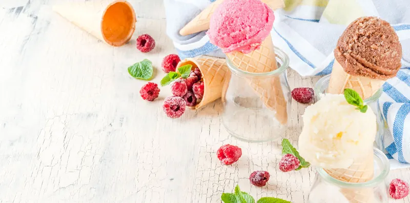
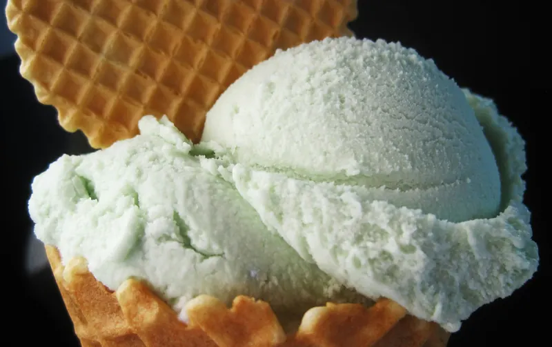
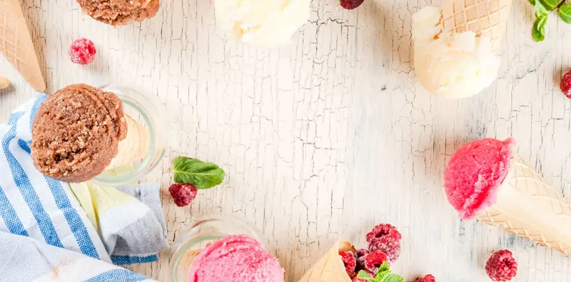
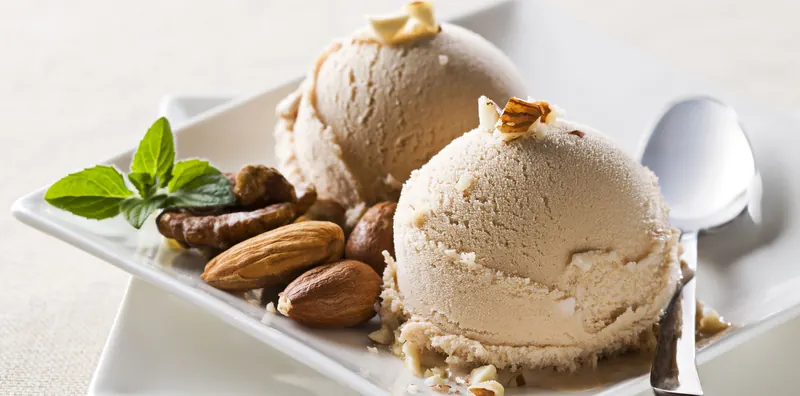
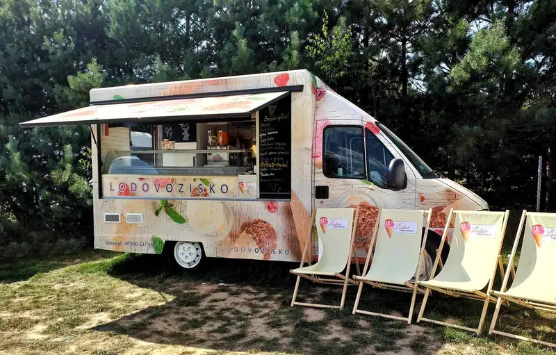

Lody rzemieślnicze
od 1984 roku
34 smaki na sezon 2027, na bazach mlecznych, jogurtowych i sorbetowych. Zapraszamy do sześciu firmowych lodziarni: w Żychlinie, Krośniewicach, Gostyninie, Kutnie, Milanówku i Łowiczu.

Nasze smaki na sezon 2027
Lody na bazach mlecznych, jogurtowych i sorbetowych, a wśród nich kilka smaków przygotowanych specjalnie dla dzieci. Tak wygląda nasza karta na 2027 rok:
Tradycja od pokoleń
Produkujemy tradycyjne lody metodą rzemieślniczą, z naturalnych składników najwyższej jakości. Receptury, na których bazujemy, stale udoskonalamy i kontrolujemy, żeby każda partia lodów była tak samo dobra.
Dbamy o to, żeby nasze lody miały pełny, głęboki smak i idealną, aksamitną konsystencję.
- Składniki wysokiej jakości
- Sprawdzone receptury
- Aksamitna konsystencja
- Pełny i głęboki smak




Nasze lodziarnie
Pierwszą lodziarnię otworzyliśmy w Żychlinie w 1984 roku. Dziś zapraszamy do sześciu.
- 1984
- 2007
- 2011
- 2013
- 2016
- 2020

Lodovozisko, czyli lodziarnia na kołach
Oprócz sześciu lodziarni stacjonarnych mamy też mobilną lodziarnię. Gdzie można ją akurat spotkać, najszybciej dowiesz się telefonicznie.
Zadzwoń: 500 237 567